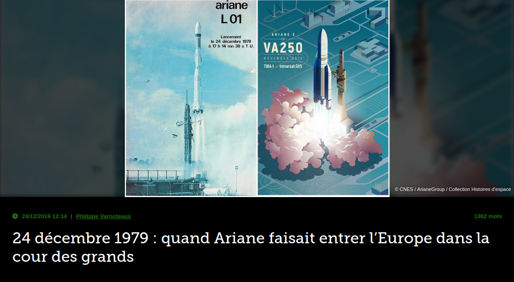
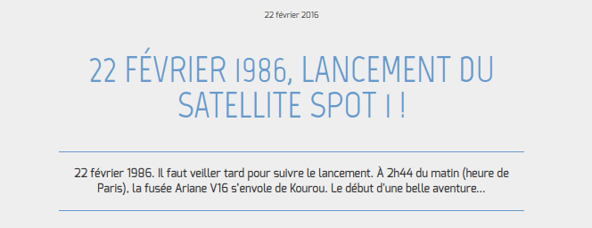
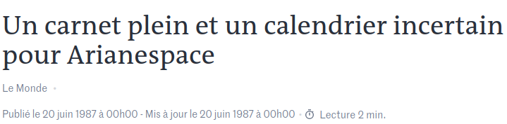
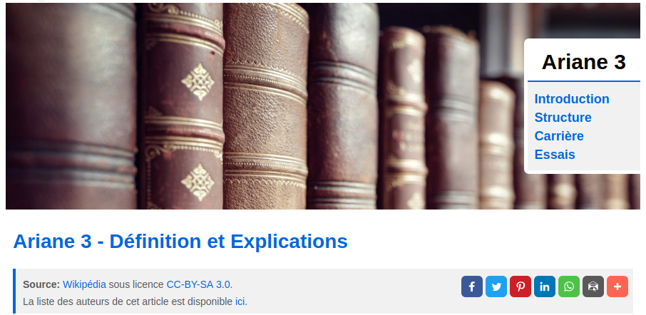

Chronologie de l'histoire des lanceur Ariane
24 décembre 1979 : Le premier lencement d'Ariane 1

https://www.air-cosmos.com/article/24-dcembre-1979-quand-ariane-faisait-entrer-leurope-dans-la-cour-des-grands-22305
22 février 1986 : Le dernier lencement d'Ariane 1

https://cnes.fr/fr/30-bougies-pour-un-spot-22-fevrier-1986-lancement-du-satellite-spot-1
31 mais 1986 : Echec du premier l'ancement d'Ariane 2

https://www.lemonde.fr/archives/article/1987/06/20/un-carnet-plein-et-un-calendrier-incertain-pour-arianespace_4049280_1819218.html
Ariane 3 - Définition et Explications

https://www.techno-science.net/glossaire-definition/Ariane-3.html